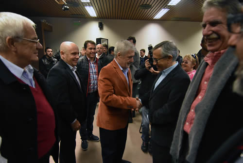
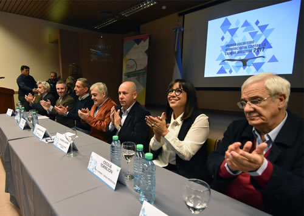

Real Chubut - Agencia de Noticias


Das Neves pidió derogar el “infame artículo 8” de la Convención Ballenera que regula la caza de cetáceos con fines científicos

Reclamó “hacer retumbar un pedido mundial” en ese sentido y manifestó su compromiso de “impulsar una noble lucha global” para terminar con la matanza de animales. Lo dijo al inaugurar el Primer encuentro argentino por el Día Mundial contra la Caza de Ballenas en Puerto Madryn al que asistieron representantes de la Cancillería Argentina, Turismo de la Nación y referentes de nuestro país, Chile, Uruguay y Brasil.
El gobernador del Chubut Mario Das Neves pidió derogar “el infame artículo 8” de la Convención Ballenera Internacional “que permite la caza de ballenas con fines científicos” al tiempo que reclamó “hacer retumbar un pedido mundial” para terminar con la matanza de cetáceos, comprometiéndose en persona y en nombre de Chubut “a impulsar una noble lucha global”.
Das Neves hizo estas declaraciones al inaugurar este sábado en Puerto Madryn el “Primer encuentro argentino por el Día Mundial contra la Caza de Ballenas” organizado por la Administración Península Valdés contando con las presencias de referentes de nuestro país, Chile, Uruguay y Brasil además del delegado argentino ante la Comisión Ballenera Internacional y consejero legal del Ministerio de Relaciones Exteriores de Argentina, Mario Oyarzábal, quien felicitó a Das Neves “por esta iniciativa que reafirma el liderazgo de Chubut en la conservación de este recurso y en la promoción del turismo responsable”.
En el encuentro, desarrollado en el Cenpat, los asistentes firmaron además una carta de intención para llevar a cabo en 2017 un encuentro internacional contra la caza de ballenas en Puerto Madryn, reafirmando de esta manera la política conservacionista y de protección que tiene la Provincia del Chubut.
INFAME ARTÍCULO
Das Neves consideró a Chubut como “un santuario y refugio mundial para la Ballena Franca Austral” y tras recordar que “en 1973 se realizó el primer avistaje en Puerto Pirámides”, remarcó que “a lo largo de los años Chubut creó nueva legislación para regular el avistaje”. Precisamente sobre “la técnica” para divisar cetáceos en las costas de la provincia dijo que “Chubut es mundialmente reconocida”.
También recordó que “en 1999 la Unesco declaró a Península Valdés como Patrimonio Natural Mundial” y dijo que por el arribo de unos 2000 ejemplares por año, la Península se ha convertido “en uno de los mayores refugios de cría y reproducción de ballena franca austral del mundo”. También habló que en 2006, durante su primera gestión “reemplazamos la legislación original y creamos una superadora reforzando la postura conservacionista y protectora” y dejó en claro que “para Chubut la preservación de la ballena franca austral está ligada a nuestro estilo de vida, pero también genera divisas al país, ingresos a la provincia y puestos de trabajo para nuestros habitantes”.
En el tramo medular de su discurso, Das Neves remarcó que “el ejemplo chubutense se irradió en Chile cuando acompañamos en 2008 a la presidente Michelle Bachelet en el marco de los 60 años de creación de la Comisión Ballenera Internacional en la declaración de Chile como territorio libre de caza, captura y comercialización de ballenas, medida fundamental porque ahí vive más del 50% de la población mundial de cetáceos” y recordó que “hoy países como Corea del Sur, Perú y Rusia que se resistían a la caza comercial de ballenas, fueron sometidos mediante Tribunal Internacional de Justicia y otros como Noruega e Islandia aún rechazan la prohibición”.
Y ahí fue cuando remarcó que “sin embargo es el artículo 8 de la Convención Internacional el que permite la caza de ballenas con fines científicos. Bajo ese pretexto países como Japón continúan su caza con fines comerciales para negocios millonarios como la industria gastronómica premium japonesa que implica una caza anual de 400 ballenas. Hoy el estudio sobre la reproducción de las ballenas puede lograrse sin matar a los animales, motivo y justificación original del artículo 8. Para modificar ese artículo se necesitan los dos tercios de los votos de los 88 miembros de la Comisión lo que dificulta la alteración del status quo. Hagamos retumbar desde este Primer encuentro argentino por el Día Mundial contra la Caza de Ballenas el pedido mundial de derogar este infame artículo y que cese la caza de ballenas bajo cualquier pretexto”, pidió.
Asimismo y para despejar cualquier duda afirmó: “cuenten con Chubut y este gobernador para impulsar una noble lucha global, la que más temprano que tarde se impondrá la humanidad y la naturaleza por sobre todo este tipo de negocio inmoral”.
Más de 36.000 muertes desde 1986
Previamente a Das Neves, Mario Oyarzabal, el delegado argentino ante la Comisión Ballenera Internacional y consejero legal del Ministerio de Relaciones Exteriores de Argentina, llamó a “defender” la moratoria aprobada hace 34 años contra la caza de ballenas por el organismo internacional, pero también lamentó que “desde 1986 se han matado más de 36.000 ballenas, de las cuales tres países han matado 30.000 ballenas. Es decir los desafíos son permanentes” apuntó.
Por eso instó “a estar alertas para defender principios que consideramos esenciales: como el uso no letal y extractivo del recurso y los derechos de las comunidades costeras a beneficiarse de este recurso” dijo, y afirmó que el encuentro desarrollado en Puerto Madryn “sirve para reafirmar el compromiso de Argentina y de Brasil, Chile y Uruguay”.
Al encuentro asistieron además el vicegobernador Mariano Arcioni; diputados provinciales; el intendente de Puerto Madryn, Ricardo Sastre; la ministra de Turismo del Chubut, Cecilia Torrejón; el vicepresidente del Área Natural Protegida Península Valdés, Héctor Castro y la directora de Desarrollo de Destinos Turísticos del Ministerio de Turismo de la Nación, Mariana Pérez Márquez, entre otros.

MAS DE 2000 EJEMPLARES
La bienvenida estuvo a cargo del intendente local, Ricardo Sastre. Manifestó su “orgullo” de que el encuentro se realice en Puerto Madryn y defendió al recurso de las ballenas “que es tan importante para la región en lo económico y turístico”. Fue allí que dijo que “más de 2000 ejemplares dan vueltas en nuestro Golfo” y subrayó que la presencia de las ballenas “permiten mejorar la calidad de destino turístico de avistaje”.
PUBLICIDAD